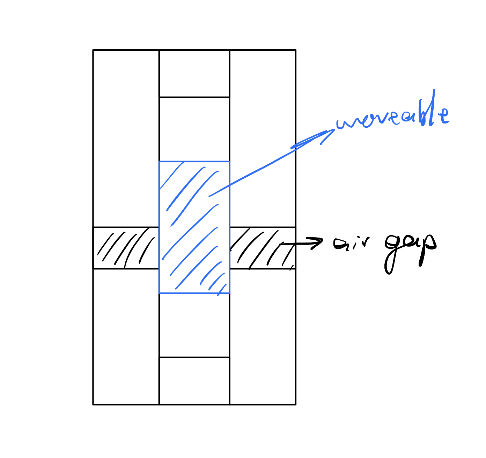
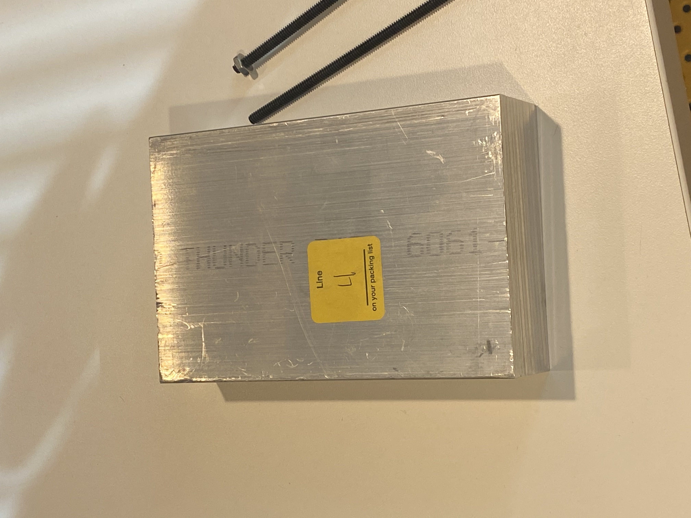
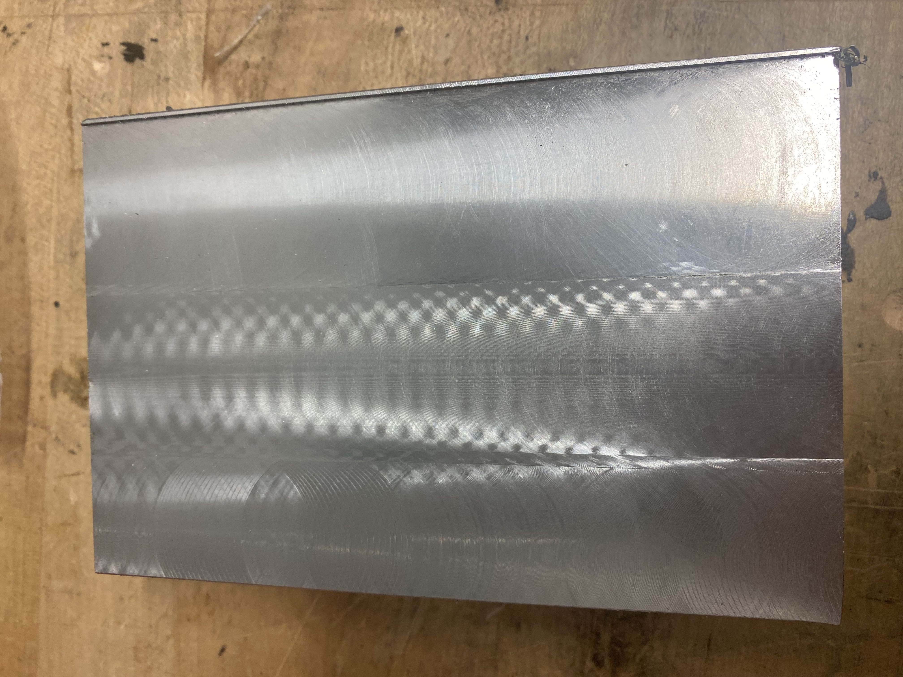
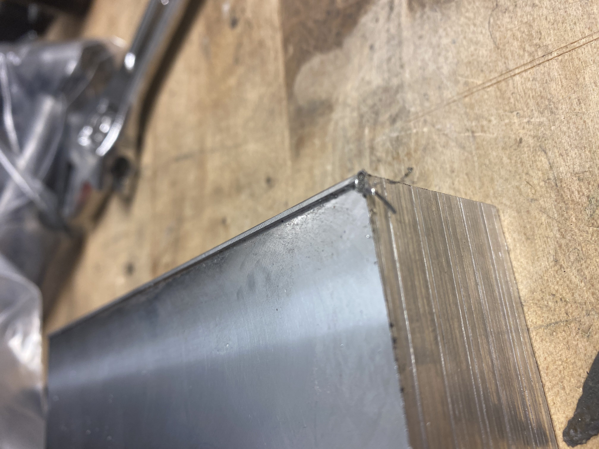

<topbar style="display:none;">
<item><a href="../index.html">Home</a></item>
<item><a href="../about.html">About</a></item>
</topbar>
<style>
a:link {
color: blue;
background-color: transparent;
text-decoration: underline;
}
a:visited {
color: pink;
background-color: transparent;
text-decoration: underline;
}
</style>
## Week 7
<br>
### Energy Storage and Heat Batteries
<br>
#### Initial Experiment Designing
Lots of questins answered about the heat batteries. We are thinking that a hot plate would be a good design for that.
Now thinking about designing experiments.
* Experiments we can do
* A single unit of the variable height fin design
* Assembling parts
* One with a mill, one with separate joined slabs of material
* Specs
* Around 3/8 thick, around an inch or more tall, non-precision ground
* 3/8"x1/2"x4", 3/8"x1.5"x4", 3/8"x1"x4"
* Order 3' long for each bar
* 4"x4"x1.5" block of aluminum
* [Aluminum bars](https://www.mcmaster.com/aluminum/multipurpose-6061-aluminum-sheets-and-bars-7/)
* [Threaded rods](https://www.mcmaster.com/threaded-rods/low-strength-steel-threaded-rods-9/) and [nuts](https://www.mcmaster.com/nuts/hex-nuts/)
#### Initial Experiment
The first experiment is to test the method of the height-adjustable fins. The goal is to construct the following
unit via two methods: one reduction method involving milling a solid aluminum block (mainly for instructive purposes),
and one involving cutting and joining aluminim bars together.

This week we focused on the milling. We went through the basics of how a milling machine works and the
steps needed to start and actually work a piece of material. Here is the starting block:

And we attempted to square up the block, considering the block wasn't adequately workable in the condition we received it in.
This was attempted and unfortunately the vise didn't grip the piece well enough, and so it gradually was lifted
and left a cliff where the tool passed.

And this was how the unmilled edge looked when we realized the mistake, and so there was no way to figure out the original height of the piece to complete the surface.

More work will be done to adequately square the block.
### CAD Software Practice
Following the basic Autodesk Fusion 360 tutorials, I learned to use the extrude and revolve tool to produce these models:
<img src="Screen Shot 2021-10-19 at 10.19.55 PM.png" alt="me" width="300"/>
<img src="Screen Shot 2021-10-19 at 10.40.24 PM.png" alt="me" width="300"/>
Overall nothing too impressive, and more CAD models will follow as I practice more and actually model parts that we wish to build.